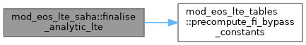
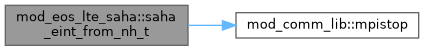
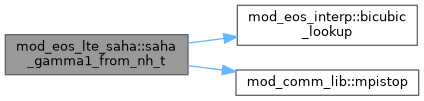
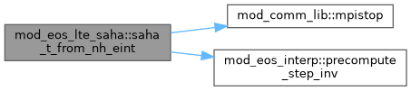

|
MPI-AMRVAC 3.2
The MPI - Adaptive Mesh Refinement - Versatile Advection Code (development version)
|
Analytic H-only Saha EoS (eos_method == 'analytic'). More...
Functions/Subroutines | |
| subroutine, public | load_analytic_lte () |
| Analytic-method load: no binary tables (on-the-fly Saha solve); just announce the method. | |
| subroutine, public | finalise_analytic_lte () |
| Analytic-method finalise (H-only Saha): no table unit conversion needed; build the Gamma1 table only for 'exact' mode, then the shared FI-bypass constants. | |
| double precision function, public | saha_eint_from_nh_t (nh_code, t_code) |
| Internal energy per nH from analytical Saha, in CODE UNITS. eint_nH = 1.5*(1+y)*kB*T [+ y*chi_H] in CGS, converted to code units. | |
| subroutine, public | saha_state_from_nh_p (nh_code, p_code, t_out, y_out, eint_nh_out) |
| Given (nH, p) in CODE UNITS, find T and y by solving p = nH*(1+y(T))*T_code. Uses bisection on T. In code units, kB is absorbed: p = nH*(1+y)*T. Given (nH, p) in CODE UNITS, find T, y, and eint/nH. Bisects on p = nH*(1+y(T))*T_code, then computes eint from final T,y. Returns eint_nH in code units (avoids redundant Saha re-evaluation). | |
| subroutine, public | saha_t_from_nh_eint (nh_code, eint_nh_code, t_out, y_out) |
| Temperature inversion: given (nH, eint/nH) in CODE UNITS, find T in CODE UNITS, by bisection (guaranteed convergence). | |
| double precision function, public | saha_gamma1_from_nh_t (nh_code, t_code) |
| Look up Gamma1 from the analytical 2D table (nH, T axes in code units). For use when eosmethod == 'analytic' and gamma1_method == 'exact'. | |
Analytic H-only Saha EoS (eos_method == 'analytic').
Ground-state Saha for pure hydrogen, solved per call (no tables): X(T) = saha_pf * T^{3/2} * exp(-chi/kB/T) y(=ne/nH) = 2X / (X + sqrt(X^2 + 4 nH X)) Public entry points take and return CODE units; CGS conversion is internal. T(nH, eint/nH) is found by bisection (default) or Newton; p(nH, T) closes the state. build_gamma1_analytic_table tabulates Gamma_1(nH, T) once for the 'exact' gamma1 path; saha_gamma1_from_nH_T reads it back.
| subroutine, public mod_eos_lte_saha::finalise_analytic_lte |
Analytic-method finalise (H-only Saha): no table unit conversion needed; build the Gamma1 table only for 'exact' mode, then the shared FI-bypass constants.
Definition at line 52 of file mod_eos_LTE_saha.t.

| subroutine, public mod_eos_lte_saha::load_analytic_lte |
Analytic-method load: no binary tables (on-the-fly Saha solve); just announce the method.
Definition at line 42 of file mod_eos_LTE_saha.t.
| double precision function, public mod_eos_lte_saha::saha_eint_from_nh_t | ( | double precision, intent(in) | nh_code, |
| double precision, intent(in) | t_code | ||
| ) |
Internal energy per nH from analytical Saha, in CODE UNITS. eint_nH = 1.5*(1+y)*kB*T [+ y*chi_H] in CGS, converted to code units.
Definition at line 84 of file mod_eos_LTE_saha.t.

| double precision function, public mod_eos_lte_saha::saha_gamma1_from_nh_t | ( | double precision, intent(in) | nh_code, |
| double precision, intent(in) | t_code | ||
| ) |
Look up Gamma1 from the analytical 2D table (nH, T axes in code units). For use when eosmethod == 'analytic' and gamma1_method == 'exact'.
Definition at line 335 of file mod_eos_LTE_saha.t.

| subroutine, public mod_eos_lte_saha::saha_state_from_nh_p | ( | double precision, intent(in) | nh_code, |
| double precision, intent(in) | p_code, | ||
| double precision, intent(out) | t_out, | ||
| double precision, intent(out) | y_out, | ||
| double precision, intent(out), optional | eint_nh_out | ||
| ) |
Given (nH, p) in CODE UNITS, find T and y by solving p = nH*(1+y(T))*T_code. Uses bisection on T. In code units, kB is absorbed: p = nH*(1+y)*T. Given (nH, p) in CODE UNITS, find T, y, and eint/nH. Bisects on p = nH*(1+y(T))*T_code, then computes eint from final T,y. Returns eint_nH in code units (avoids redundant Saha re-evaluation).
Definition at line 106 of file mod_eos_LTE_saha.t.
| subroutine, public mod_eos_lte_saha::saha_t_from_nh_eint | ( | double precision, intent(in) | nh_code, |
| double precision, intent(in) | eint_nh_code, | ||
| double precision, intent(out) | t_out, | ||
| double precision, intent(out) | y_out | ||
| ) |
Temperature inversion: given (nH, eint/nH) in CODE UNITS, find T in CODE UNITS, by bisection (guaranteed convergence).
Definition at line 161 of file mod_eos_LTE_saha.t.
